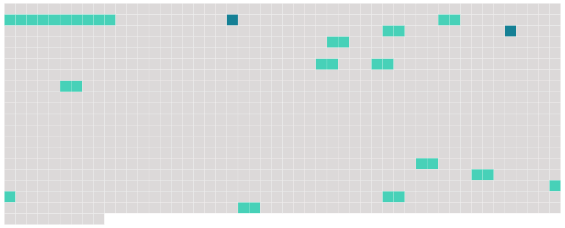

Longueur nb maillons : 14 mentions |
 |
L'aptitude technique de la personne qui souhaite exercer les fonctions de garde particulier est constatée par arrêté du préfet du département où la formation a été suivie ou, lorsque le demandeur appartient à une des catégories de personnes pour lesquelles aucune formation n'est exigée, par arrêté [du préfet du département de son domicile ou du département] dans lequel elle envisage d'exercer ses fonctions. S' [il] estime que les éléments produits justifient de l'aptitude à l'accomplissement des missions de garde particulier, [le préfet] prend, par arrêté, une décision reconnaissant l'aptitude technique du demandeur à exercer, dans les domaines fixés par l'arrêté, les fonctions de garde particulier. [1 phrases]
Article R15-33-27
[Il] fait procéder à une enquête administrative pour s'assurer que le demandeur satisfait aux conditions fixées au 1 ° de l'article 29-1.
Article R15-33-27-1 [3 phrases]
La carte d'agrément est visée par [le préfet]
Article R15-33-28 [1 phrases] En cas de rejet de la demande de renouvellement, le commettant et le garde particulier doivent, préalablement à la décision, avoir été mis à même de présenter, devant [le préfet] ou le fonctionnaire que celui -ci délègue à cet effet, leurs observations écrites ou, sur leur demande, des observations orales. [10 phrases]
Article R15-33-29-2 Le commettant et le garde particulier doivent, préalablement à la décision, avoir été mis à même de présenter, devant [le préfet] ou le fonctionnaire que celui -ci délègue à cet effet, leurs observations écrites ou, sur leur demande, des observations orales. [1 phrases] En cas d'urgence et pour des motifs d'ordre public, [le préfet] peut suspendre à titre conservatoire l'agrément du garde particulier, pour une durée maximale de trois mois, par décision motivée. [1 phrases]
[Le préfet] informe le commettant et le président du tribunal d'instance auprès duquel le garde a prêté serment de la suspension ou du retrait de l'agrément. Le commettant est tenu d'informer sans délai [le préfet] lorsque le garde particulier qu'il emploie cesse de remplir une ou plusieurs des conditions prévues à l'article 29-1 ou lorsque celui -ci ne respecte pas les dispositions de l'article R. 15-33-29-1. |
 |
La ressource peut être téléchargée sur la page Ortolang
Si vous avez des questions ou vous voyez des erreurs, merci d'envoyer un mail à silvia.federzoni89@gmail.com
Site développé par S. Federzoni (contact)